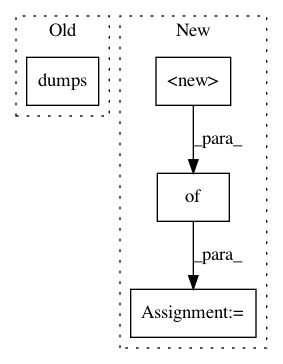

502d6ebfcd698061cbdc1b369cb7ff449ff9db08,tests/unit/test_estimator.py,,test_init_with_source_dir_s3,#Any#Any#,330
Before Change
expected_hyperparameters = BASE_HP.copy()
expected_hyperparameters["sagemaker_enable_cloudwatch_metrics"] = "false"
expected_hyperparameters["sagemaker_container_log_level"] = str(logging.INFO)
expected_hyperparameters["sagemaker_submit_directory"] = json.dumps("s3://location")
expected_hyperparameters["sagemaker_region"] = ""us-west-2""
actual_hyperparameter = sagemaker_session.method_calls[1][2]["hyperparameters"]
assert actual_hyperparameter == expected_hyperparameters
After Change
enable_cloudwatch_metrics=False)
fw._prepare_for_training()
expected_hyperparameters = {
"sagemaker_program": SCRIPT_NAME,
"sagemaker_job_name": JOB_NAME,
"sagemaker_enable_cloudwatch_metrics": False,
"sagemaker_container_log_level": logging.INFO,
"sagemaker_submit_directory": "s3://location",
"sagemaker_region": "us-west-2",
}
assert fw._hyperparameters == expected_hyperparameters
// _TrainingJob "utils"
In pattern: SUPERPATTERN
Frequency: 3
Non-data size: 4
Instances
Project Name: aws/sagemaker-python-sdk
Commit Name: 502d6ebfcd698061cbdc1b369cb7ff449ff9db08
Time: 2018-06-04
Author: 6631887+laurenyu@users.noreply.github.com
File Name: tests/unit/test_estimator.py
Class Name:
Method Name: test_init_with_source_dir_s3
Project Name: OpenMined/Grid
Commit Name: 00be4ae634832d8c39a2468c66349df964585a2c
Time: 2019-10-21
Author: ionesiojr@gmail.com
File Name: grid/websocket_client.py
Class Name: WebsocketGridClient
Method Name: get_node_id
Project Name: OpenMined/Grid
Commit Name: 00be4ae634832d8c39a2468c66349df964585a2c
Time: 2019-10-21
Author: ionesiojr@gmail.com
File Name: grid/websocket_client.py
Class Name: WebsocketGridClient
Method Name: download_model